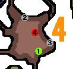
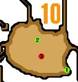

맵의 특징
- 낮. 에리어8·9·10에서는 쿨러드링크 or「더위무효」가 없으면 체력이 감소한다.
- 밤. 에리어8·9·10에서는 핫드링크 or「추위무효」가 없으면 스태미너 상한이 감소한다.
- 에리어4·8에서는 개미굴? (대형 몬스터의 스태미너 회복 포인트)가 있다. 폭탄, 확산탄, 용격포 등으로 파괴 가능.
- BC 뒤 (납품 BOX의 옆)에, 에리어7 방면으로 가는 길이 있다.
에리어1
| 위치 | 종별 | 촌장 / 집회욕장 하위 |
집회욕장 상위 |
훈련소 | |
|---|---|---|---|---|---|
| ① 풀 |
채취 | 화약초 확산열매 담쟁이잎 페인트열매 소거의씨 |
화약초 확산열매 담쟁이잎 페인트열매 소거의씨 |
||
| ② 돌 |
채취 | 숫돌 자갈 자갈x2 |
숫돌 자갈 자갈x2 |
||
| ③ 곤충 |
곤충망 | 쓴벌레 불사충 뇌광충 로얄투구벌레 죽은벌레 |
쓴벌레 불사충 뇌광충 왕족풍뎅이 로얄투구벌레 갓투구벌레 |
에리어2
 |
위치 | 종별 | 촌장 / 집회욕장 하위 |
집회욕장 상위 |
훈련소 |
|---|---|---|---|---|---|
| ① 암석 |
채취 | 낚시지렁이 자갈 |
낚시지렁이 자갈 |
||
| ② 고목 |
채취 | 약초 고추 개다래 |
약초 고추 개다래 |
||
| ③ | 곤충망 | 뇌광충 쓴벌레 접착흑개미 낚시용애벌레 죽은벌레 |
뇌광충 쓴벌레 낚시용애벌레 도스헤라클레스 왕족풍뎅이 |
에리어3
| 위치 | 종별 | 촌장 / 집회욕장 하위 |
집회욕장 상위 |
훈련소 | |
|---|---|---|---|---|---|
| ① 풀 |
채취 | 약초 서리풀 고추 |
약초 서리풀 고추 |
||
| ② 열매 |
채취 | 관통열매 페인트열매 확산열매 |
관통열매 페인트열매 확산열매 |
||
| ③ 풀 |
채취 | 화약초 수면초 관통열매 |
화약초 수면초 관통열매 |
에리어4
|  | 위치 | 종별 | 촌장 / 집회욕장 하위 |
집회욕장 상위 |
훈련소 |
|---|---|---|---|---|---|
| ① 풀 |
채취 | 약초 고추 개다래 |
약초 고추 개다래 |
||
| ② | 채굴 | 숫돌 철광석 용골결정 대지의결정 마카라이트광석 |
숫돌 철광석 마카라이트광석 용골결정 카브레라이트광석 의문의부적x2 황금골 |
||
| ③ | 채굴 | 숫돌 대지의결정 마카라이트광석 자갈 |
숫돌 대지의결정 마카라이트광석 카브레라이트광석 자갈 의문의부적x2 황금골 |
||
| ④ | 곤충망 | 접착흑개미 낚시용파리미끼 쓴벌레 불사충 로얄투구벌레 |
낚시용파리미끼 쓴벌레 도스헤라클레스 불사충 왕족풍뎅이 로얄투구벌레 갓투구벌레 |
에리어5
| 위치 | 종별 | 촌장 / 집회욕장 하위 |
집회욕장 상위 |
훈련소 | |
|---|---|---|---|---|---|
| ① 뼈 |
채취 | 의문의뼈 용골【소】 척추뼈x5 황금골 의문의두골 |
의문의뼈 용골【소】 척추뼈x5 황금골 의문의두골 |
||
| ② 뼈 |
채취 | 봉형의뼈 용골【소】 의문의뼈 |
봉형의뼈 용골【소】 의문의뼈 |
||
| ③ 똥 |
채취 | 몬스터배설물 몬스터배설물x2 소거의씨 |
몬스터배설물 몬스터배설물x2 소거의씨 |
에리어6
| 위치 | 종별 | 촌장 / 집회욕장 하위 |
집회욕장 상위 |
훈련소 | |
|---|---|---|---|---|---|
| ① 버섯 |
채취 | 니트로버섯 푸른버섯 특산버섯 만드라고라 |
니트로버섯 푸른버섯 특산버섯 만드라고라 엄선버섯 |
||
| ② 자재 |
채취 | 페인트볼 휴대식량 투척나이프 |
페인트볼 휴대식량 투척나이프 |
||
| ③ | 채굴 | 철광석 대지의결정 빙결정 용골결정 마카라이트광석 무구옥 |
철광석 마카라이트광석 빙결정 카브레라이트광석 무구옥 황금골 용골결정 의문의부적x2 상무구옥 |
||
| ④ | 채굴 | 자갈 철광석 빙결정 용골결정 마카라이트광석 |
자갈 철광석 빙결정 카브레라이트광석 드라그라이트광석 빛나는부적 황금골 용골결정 |
||
| ⑤ | 고양이의 둥지 | 훔친 물건 | |||
| ⑥ 비경 |
채굴 | 드라그라이트광석 황금골 카브레라이트광석 빛나는부적 빙결정 견무구옥 녹슨덩이 |
|||
에리어7
| 위치 | 종별 | 촌장 / 집회욕장 하위 |
집회욕장 상위 |
훈련소 | |
|---|---|---|---|---|---|
| ① 버섯 |
채취 | 니트로버섯 마비버섯 특산버섯 푸른버섯 |
니트로버섯 마비버섯 푸른버섯 특산버섯 엄선버섯 |
||
| ② 풀 |
채취 | 약초 선인장의꽃 개다래 낚시지렁이 담쟁이잎 |
약초 선인장의꽃 개다래 낚시지렁이 담쟁이잎 |
||
| ③ | 채취 | 의문의뼈 초식룡의알 봉형의뼈 |
의문의뼈 초식룡의알 봉형의뼈 |
||
| ④ | 낚시 | 전갱이 횟감용생선 튀는정어리 확산툭눈붕어 황금어 |
횟감용생선 확산툭눈붕어 튀는정어리 전갱이 황금어 백금어 |
에리어8
| 위치 | 종별 | 촌장 / 집회욕장 하위 |
집회욕장 상위 |
훈련소 | |
|---|---|---|---|---|---|
| ① 선인장 |
채취 | 선인장의꽃 고추 붉은씨 |
선인장의꽃 고추 붉은씨 |
||
| ② 선인장 |
채취 | 선인장의꽃 고추 붉은씨 |
선인장의꽃 고추 붉은씨 |
||
| ③ 뼈 |
채취 | 봉형의뼈 용골【소】 의문의뼈 |
봉형의뼈 용골【소】 의문의뼈 |
에리어9
| 위치 | 종별 | 촌장 / 집회욕장 하위 |
집회욕장 상위 |
훈련소 | |
|---|---|---|---|---|---|
| ① 선인장 |
채취 | 선인장의꽃 화약초 담쟁이잎 개다래 |
선인장의꽃 화약초 담쟁이잎 개다래 |
||
| ② 뼈 |
채취 | 의문의뼈 용골【소】 척추뼈x5 황금골 의문의두골 |
의문의뼈 용골【소】 황금골 척추뼈x5 의문의두골 |
||
| ③ 나무 뿌리 |
채취 | 약초 담쟁이잎 개다래 |
약초 담쟁이잎 개다래 |
에리어10
|  | 위치 | 종별 | 촌장 / 집회욕장 하위 |
집회욕장 상위 |
훈련소 |
|---|---|---|---|---|---|
| ① 돌 |
채취 | 숫돌 자갈 자갈x2 |
숫돌 자갈 자갈x2 |
||
| ② 풀 |
채취 | 화약초 수면초 관통열매 |
화약초 수면초 관통열매 |
||
| ③ | 곤충망 | 낚시용애벌레 뇌광충 쓴벌레 접착흑개미 죽은벌레 |
뇌광충 낚시용애벌레 쓴벌레 도스헤라클레스 접착흑개미 왕족풍뎅이 |
에리어11
| 위치 | 종별 | 촌장 / 집회욕장 하위 |
집회욕장 상위 |
훈련소 | |
|---|---|---|---|---|---|
| ① 뼈 |
채취 | 봉형의뼈 용골【소】 의문의뼈 |
봉형의뼈 용골【소】 의문의뼈 |
||
| ② 똥 |
채취 | 몬스터배설물 몬스터배설물x2 용배설물 용골【소】 |
몬스터배설물x2 몬스터배설물 용배설물 용골【소】 |
||
| ③ | 채굴 | 철광석 빙결정 대지의결정 용골결정 황금골 |
철광석 드라그라이트광석 빙결정 용골결정 카브레라이트광석 황금골 빛나는부적 녹슨덩이 |
||
| ④ | 채굴 | 대지의결정 숫돌 마카라이트광석 자갈 황금골 무구옥 |
대지의결정 숫돌 무구옥 황금골 자갈 카브레라이트광석 의문의부적x2 상무구옥 |